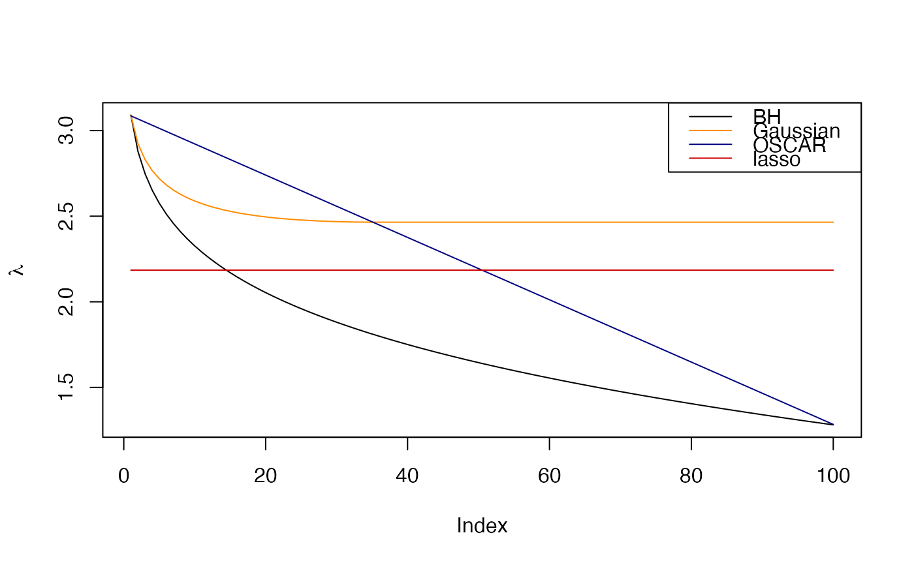

R/regularizationWeights.R
regularizationWeights.RdThis function generates sequences of regularizations weights for use in
SLOPE() (or elsewhere).
regularizationWeights(
n_lambda = 100,
type = c("bh", "gaussian", "oscar", "lasso"),
q = 0.2,
theta1 = 1,
theta2 = 0.5,
n = NULL
)The number of lambdas to generate. This should typically be equal to the number of predictors in your data set.
The type of lambda sequence to use. See documentation for
in SLOPE(), including that related to the lambda parameter in that
function.
parameter controlling the shape of the lambda sequence, with
usage varying depending on the type of path used and has no effect
is a custom lambda sequence is used. Must be greater than 1e-6 and
smaller than 1.
parameter controlling the shape of the lambda sequence
when lambda == "OSCAR". This parameter basically sets the intercept
for the lambda sequence and is equivalent to \(\lambda_1\) in the
original OSCAR formulation.
parameter controlling the shape of the lambda sequence
when lambda == "OSCAR". This parameter basically sets the slope
for the lambda sequence and is equivalent to \(\lambda_2\) in the
original OSCAR formulation.
The number of rows (observations) in the design matrix.
A vector of length n_lambda with regularization weights.
Please see SLOPE() for detailed information regarding the parameters in
this function, in particular the section Regularization Sequences.
Note that these sequences are automatically scaled (unless a value for
the alpha parameter is manually supplied) when using SLOPE(). In this
function, nu such scaling is attempted.
# compute different penalization sequences
bh <- regularizationWeights(100, q = 0.2, type = "bh")
gaussian <- regularizationWeights(
100,
q = 0.2,
n = 300,
type = "gaussian"
)
oscar <- regularizationWeights(
100,
theta1 = 1.284,
theta2 = 0.0182,
type = "oscar"
)
lasso <- regularizationWeights(100, type = "lasso") * mean(oscar)
# Plot a comparison between these sequences
plot(bh, type = "l", ylab = expression(lambda))
lines(gaussian, col = "dark orange")
lines(oscar, col = "navy")
lines(lasso, col = "red3")
legend(
"topright",
legend = c("BH", "Gaussian", "OSCAR", "lasso"),
col = c("black", "dark orange", "navy", "red3"),
lty = 1
)
